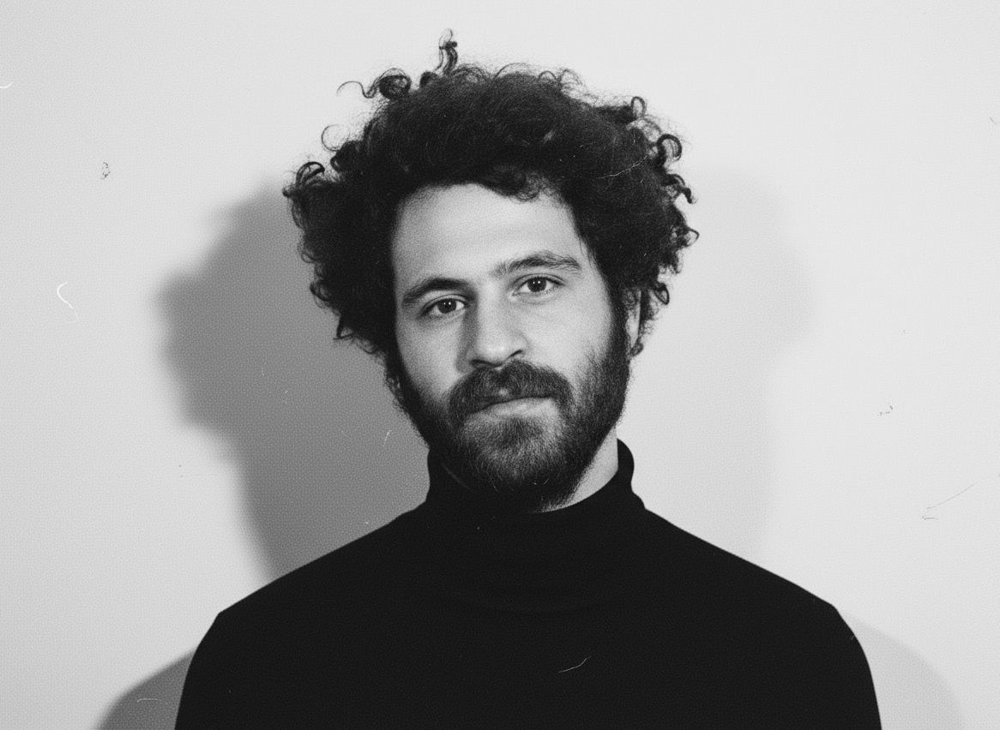

My name is Wissam Sader, a contemporary photographer specializing in fashion, portrait, and commercial photography. With over a decade of experience across the Middle East and Europe, I have collaborated with leading fashion brands, magazines, and creative agencies.
While my signature style combines technical precision with a minimalist aesthetic, I also adapt to a wide range of visual approaches depending on the project, ensuring each client's vision is met with creativity and authenticity. My expertise spans both studio and natural light, resulting in images that are refined, versatile, and visually striking.
Currently based between Berlin, Stockholm, Dubai, Beirut, and Saudi Arabia.
